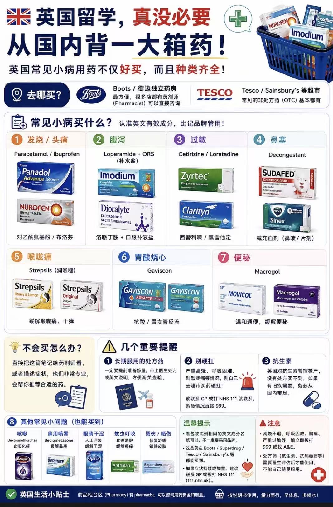

原来，血糖降不下来是因为用药方案过时了
2026年英国NICE指南更新，颠覆传统二甲双胍单药起始阶梯疗法，推荐新诊断患者起始联合使用SGLT-2抑制剂与二甲双胍，心血管高危或40岁前确诊者加用GLP-1激动剂，以早期保护心肾。

英国TOP医生远程问诊案例：胸痛+肌钙蛋白升高居然是因为气胸
客户胸痛肌钙蛋白升高，疑似心梗但检查不典型。英国专家远程会诊，确诊气胸致心肌一过性损伤，非冠脉问题。对症治疗后痊愈。找对医生，比多做检查更重要。
英国留学|眼睛红肿、狂眼泪居然是因为花粉过敏？
16岁女儿在伦敦夏令营期间眼部严重红肿。我们建议先看全科而非专科，经排查确诊为季节性花粉过敏。对症治疗后症状显著缓解，女孩恢复学习。

英国留学｜16岁孩子突发罕见脑炎；NHS服务拉垮，私立没人接
一位伦敦A-Level女生突发NMDA脑炎，NHS虽保命但康复迟缓。Arkect团队紧急介入，72小时内锁定顶级专家Dr Zandi，一周内完成转诊私立病房。

留学英国，感冒发烧别硬扛：一份本地买药地图请收好
英国非处方药购买很方便，无需自带大量药品。常见病有对应药，认准有效成分。处方药自备，急症求医。我们提供医疗支持。
英国留学｜有效病假条怎么开？不是所有Sick Note都有效
初到英国的留学生面对NHS体系常因预约效率低下而陷入困境。本文详解从GP就诊延误到病假证明缺失的实际痛点，并梳理圣链健康（Arkect Health）作为高效替代方案的适用场景与操作流程。

英国留学生就医指南：NHS注册、GP预约与紧急情况处理
初到英国的留学生面对NHS体系往往不知所措。本文详解从NHS注册到各层级就医的完整流程。

医学影像怎么看？给患者的CT/MRI报告解读指南
面对满是专业术语的影像报告，患者往往一头雾水。本文用通俗语言帮您理解报告中的关键信息。

远程问诊如何改变跨境就医格局？
从视频问诊到多学科远程会诊，数字医疗正在打破国界限制，让中国患者足不出户即可获得英国顶尖专家的诊疗意见。

宁养计划：为慢病患者重塑生活品质
慢性病不是终点，而是需要精细化管理的长期旅程。圣链健康宁养计划整合全球顶尖医疗资源，为慢病患者提供全周期健康守护。

赴英就医全流程指南：从签证到入院的无缝衔接
圣链健康为您详解赴英就医的每一个关键环节，从医疗签证申请到英国医院入院，全程专业陪同。

英国医疗体系全景解读：NHS、私立医疗与GP制度
理解英国医疗体系的基本架构，是做出明智就医决策的基础。一文讲清NHS与私立医疗的关系和选择。

视频问诊前如何准备，才能让专家高效诊断？
充分的资料准备是远程问诊成功的关键。本文为您梳理问诊前需要准备的完整资料清单和注意事项。

留学生心理健康：在异国他乡识别和应对心理困扰
文化冲击、学业压力、社交孤立……留学生心理健康问题不容忽视。圣链健康提供专业的心理支持资源。

英国顶级医院巡礼：如何选择最适合您的医疗机构
从The Royal Marsden到Great Ormond Street，英国拥有全球顶尖的专科医院。不同疾病该如何选择？

英国NHS慢病管理模式对中国的启示
英国NHS在慢病管理领域积累了70余年经验，其系统性管理理念值得借鉴。圣链健康将NHS最佳实践本土化落地。

基因检测报告怎么看？BRCA、EGFR与靶向治疗的关键解读
基因检测正成为精准医疗的基石。本文帮助您理解检测报告中与治疗决策最相关的核心信息。

远程第二诊疗意见：避免误诊的关键一步
研究表明约20%的初次诊断需要修正。远程第二诊疗意见为重大疾病患者提供了不冒风险即可获得国际专家确认的途径。

行前健康准备清单：出发前必做的10件事
留学英国前做好健康准备，比生病后再应对重要100倍。圣链健康为您整理完整的行前健康准备清单。

医疗签证申请避坑指南：8个常见拒签原因及对策
医疗签证被拒是赴英就医最大的不确定性。圣链健康签证团队总结5年经验，帮您避开8大常见拒签陷阱。
客户心声
圣链健康帮我找到了最合适的英国专家，远程会诊给了我全新的治疗方案，避免了不必要的手术。翻译医生非常专业，沟通完全没有障碍。
从签证到手术，圣链健康全程陪伴，让我们全家都非常安心。孩子在伦敦的治疗效果超出了我们的预期，感谢圣链健康的专业团队。
签约私人医生服务一年了，全家人的健康都有了保障。私人医生非常负责，每次咨询都很耐心，真正做到了'亚洲首家英式医疗资源整合平台'。